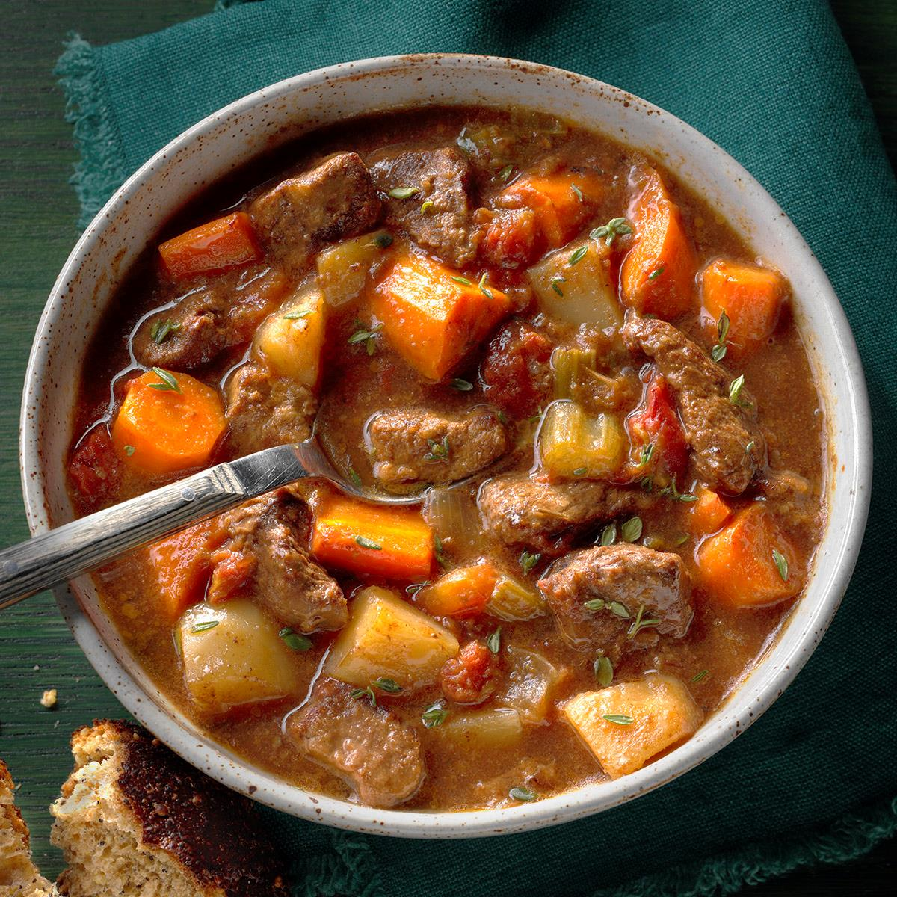

Beef Stew

Description
This instant beef stew recipe will rock your taste
buds, and this won't give you the runs like McDonald's would!
To make this, you'll defnitely need beef to start with!
Then you'll need potatoes, mushrooms, beef broth, onion,
garlic, tomato paste, and some seasonings!
Whether you're having dinner with the family or in need
of a quick chew, beef stew can be the dish for you!
Ingredients
- 1 pound beef chuck, cut into cubes
\
- 4 potatoes, cubed
- 1½ cups mushrooms, halved
- 2 carrots, cut into ½-inch thick slices
- 3 cups beef broth
- 1 onion, cut into 6 wedges
- 2 cloves garlic, minced
- 1 tablespoon tomato paste
- 1 tablespoon butter
- 1 tablespoon salt
- ½ teaspoon ground black pepper
Steps
- Gather all the Ingredients
- Heat up your pan or pressure cooker, and melt the butter in there.
Cook those beef chucks until browned on all sides.
- After meat is cooked, add the potatoes, mushrooms, carrots, onion
wedges, and garlic. Include the tomato paste, salt, and ground black
pepper as well.
- Close the lid and cook on low-medium heat for 35 minutes
- Release the lid after the time is up, let it cool before serving.
Your lazy man's stew should be satisfactory, and your gut will
thank you for choosing this over fast food!